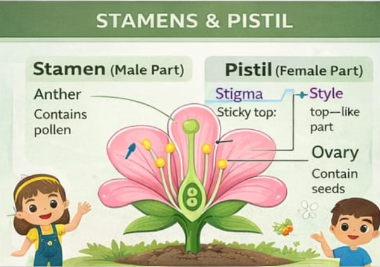
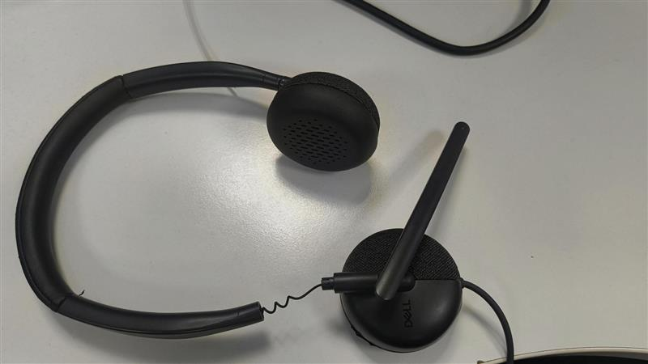

Certificates & Qualifications
Formal qualifications and professional development certifications.
SCIENCE

Stamens & Pistil
Science Teaching Resource
2026
MATHEMATICS

Fractions Operations
Mathematics Teaching Resource
2026
EDTECH

EdTech Equipment
Digital Learning Resource
2026